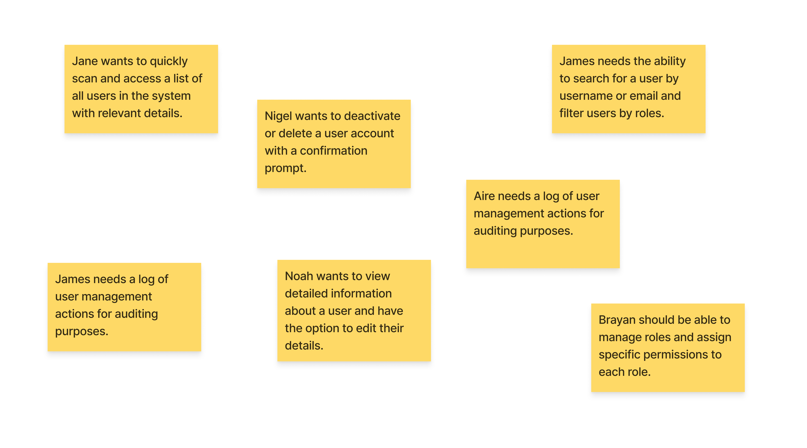
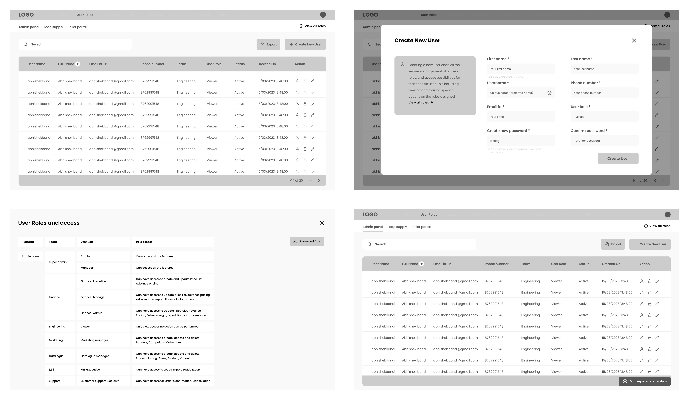
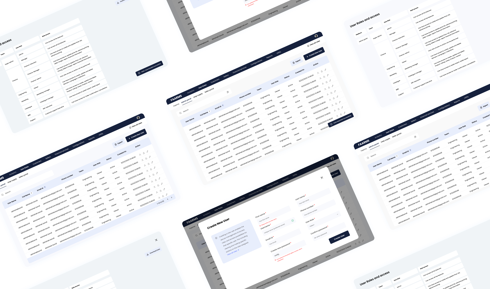

User management
Research | UX Design | UI Design
Our project focused on designing a new User Management Dashboard. We identified key features through stakeholder interviews and competitive analysis. The resulting dashboard features a clean design, improved search and filtering, an efficient user addition form, and robust roles and permissions management.
Roles and Responsibilities
- UI Design, Wireframe, Prototyping
Project Context
- Oct 2023 - Nov 2023
- Project
Tools used
- Figma
- FigJam
Project Overview
The project involved conducting thorough research to design a user-friendly interface for administrators, facilitating the seamless generation of new users and efficient assignment of roles to access the platform. The resulting interface empowers administrators to effortlessly create users and allocate roles according to specific access requirements, enhancing overall usability and administrative control.
Research and analysis
Stakeholder Interviews:
Conducted interviews with system administrators to understand pain points and gather requirements. Identified key features and improvements needed.
Competitive Analysis:
Analyzed competitors' user management interfaces to identify best practices and potential differentiators.
User Stories (Example)
Design objectives
Wireframes
Based on the data from researcha and ideating process, I have created wireframes to look after how our design aligns with the requirements and the problem we are trying to solve.
High fertility design
Created high fertility design with a visual appearance, which is easy to navigate and perform actions quickly. below are some screens representing the designs
Prototyping
Created interactive prototypes to visualize the user flow and test the functionality of design.
User Testing and Results
- Conducted usability testing with a group of administrators to gather feedback.
- Iterated on the design based on user input and technical constraints.
- User Satisfaction: Increased positive feedback from administrators during testing.
- Task Completion Time: Reduced time spent on common tasks by 20%.
Next Step
Collaborated closely with the development team to translate design concepts into a tangible reality, ensuring a seamless integration of functionality and aesthetics